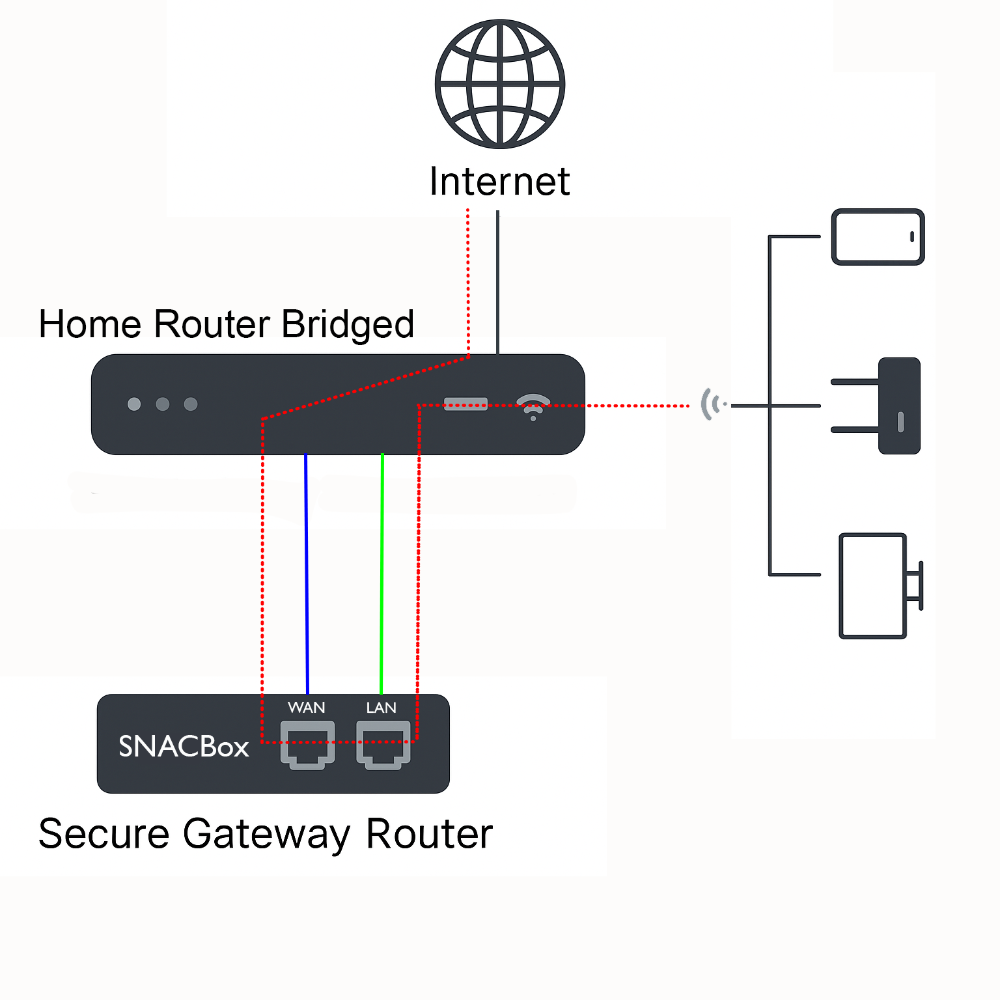

SNACBox - System Design
Open Source Components
OpenWRT
- https://openwrt.org/The OpenWrt Project is a Linux operating system for embedded devices that is used to build a router.
AdguardHome
- https://github.com/AdguardTeam/AdGuardHomeFree and open-source, powerful network-wide ads & trackers blocking DNS server.
Docker
- https://www.docker.com/community/open-source/Docker is built for developers, by developers. It enables team collaboration, efficient packaging, and scalable distribution of open-source projects, with a focus on trust and security.
e2Guardian
- https://github.com/e2guardian/e2guardiane2guardian is a content-filtering proxy that can work in explicit and transparent proxy mode or as an ICAP server.
Unbound
- https://www.nlnetlabs.nl/projects/unbound/about/Unbound is a validating, recursive, caching DNS resolver.
PHP
- https://www.php.net/A popular general-purpose scripting language, especially suited to web development. Fast, flexible and pragmatic, PHP powers everything from your blog to the most popular websites in the world.
How it works


When a device connects to the Home router it passes this request onto the SNACBox OpenWRT Gateway, the device will then get a DHCP address. Once the client device registers with the SNACBox it can then be configured into one of 6 categories or ratings (G, PG, 12, 15, 16, 18). When a client device wants to connect to the internet it must first be processed by the SNACBox rules.
In this example we will use the G rating as an example.
The G device sends a request to access a website. OpenWRT Firewall will forward the requests (80 HTTP, 443 HTTPS, 53 DNS) to a Docker container.
The G docker container runs 2 services, E2Guardian Proxy and Unbound DNS.
The G docker container processes the DNS requests and forwards them to AdGuardHome for processing.
AdGuardHome will have a set of filter rules (Child safe websites, Specific restricted services and Safe Search) setup for the G docker container.
AdGuardHome processes the DNS request, based on the filter rules, if the request is forwarded to the internet AdGuardHome using DOH (DNS over HTTPS).
If AdGuardHome DNS returns the address to the site requested then the G docker container will permit the HTTP/HTTPS request access the internet.
If AdGuardHome DNS does not return the address to the site requested then the G docker container will close the request and the HTTP/HTTPS will go nowhere.
Note: The reason for the E2Guardian Proxy is to prevent DNS bypass by using DOH on the client device.